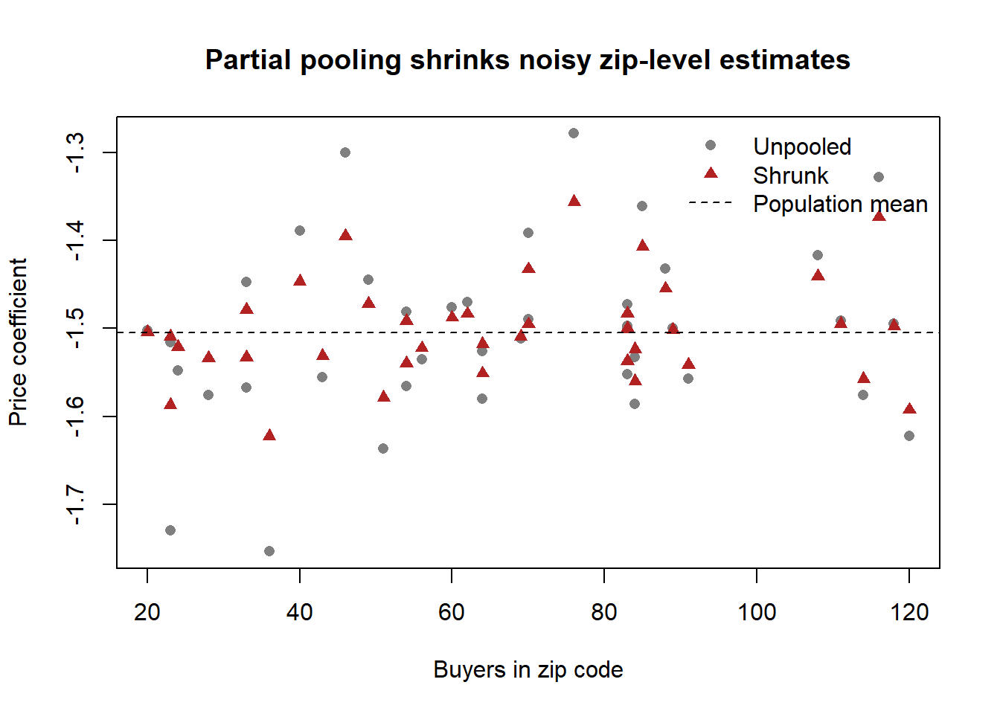

flowchart TD
Q["Research question"] --> G{"Goal?"}
G -->|Forecast in<br/>stable setting| D["Descriptive models<br/>(diffusion, dynamic logit)"]
G -->|Measure a<br/>local effect| M["Quasi-experiment<br/>(IV, RD, DiD)"]
G -->|Radical<br/>counterfactual| S["Structural demand<br/>(+ supply) models"]
S --> H{"Heterogeneity?"}
H -->|Observed| AP["A priori<br/>segmentation"]
H -->|Unobserved,<br/>discrete| LC["Latent-class<br/>mixture"]
H -->|Unobserved,<br/>continuous| RC["Random-coefficients<br/>logit (BLP)"]
S --> E{"Endogenous<br/>marketing mix?"}
E -->|Price| IV["Instruments:<br/>cost shifters,<br/>other markets"]
E -->|Advertising /<br/>promotion| CF["Control function /<br/>structural restrictions"]
48 Marketing Mix Models
A marketing mix model is a quantitative account of how demand responds to the levers a firm controls—price, advertising, promotion, distribution, and product characteristics—estimated from data on what consumers actually bought. The practical question it answers is deceptively simple: if the firm cuts price by ten percent, runs a feature, or opens a dealership two miles closer to the buyer, how much more does it sell, and at whose expense? The scientific question underneath is harder: which of the patterns in the data reflect a stable behavioral mechanism that would survive the firm changing its policy, and which are artifacts of the firm having chosen its marketing in the first place.
This chapter develops the demand-side modeling tradition that dominates empirical marketing. It is organized around a single tension. On one side sits the descriptive goal—summarize observables, forecast, decompose sales into contributions from each lever—for which a flexible regression is often enough. On the other sits the structural goal—recover preference and cost primitives that are invariant to the policy under study, so the model can answer counterfactuals the data never witnessed. The two are not competitors so much as points on a continuum of how much economic theory one is willing to impose, and how radical a counterfactual one needs to evaluate. We make that continuum explicit, then build the workhorse models—random-coefficients discrete choice, multi-category and store-choice systems, and advertising-response models—giving each its estimator, its identifying assumptions, and the conditions under which identification fails. The structural-modeling machinery these models rely on is developed in Chapter 29; here we put it to work on the marketing mix specifically, and connect it to the joint treatment of demand-and-supply systems in Section 29.2.
By the end the reader should be able to (i) place a given modeling choice on the descriptive–structural continuum and justify it from the research question; (ii) write down a random-coefficients logit demand system, state what identifies its parameters, and name the instruments that rescue it from price endogeneity; and (iii) reason about heterogeneity, endogeneity, and the limits of observational advertising measurement the way the frontier literature does.
48.1 A Taxonomy of Models
Begin with the distinction that organizes everything else. A descriptive model characterizes relationships among observables: it answers “what is the conditional distribution of sales given price and advertising in this market?” A structural model estimates features of a data-generating process—a set of probabilistic or functional relationships between observables and latents—that are held to be invariant to the changes in the variables of interest (Reiss 2011). The crucial point, easily lost, is that any causal claim is a form of structural estimation. Treatment effects such as the average treatment effect (ATE), the effect of treatment on the treated (TT), or the local average treatment effect (LATE) are all defined only relative to assumptions about how the data were generated; there is no such thing as a “model-free” causal quantity (Reiss 2011). Causal inference is the special case of structural inference in which the structural feature of interest is an effect of an intervention.
It is worth fixing the vocabulary precisely, because applied work routinely abuses it. Following Reiss (2011), a structure \(S\) is a complete data-generating process that implies a joint distribution of the observables. Let \(\mathcal{S}\) be the set of all admissible structures and \(S_0 \in \mathcal{S}\) the true one. A hypothesis is any nonempty subset \(\mathcal{H} \subseteq \mathcal{S}\), and it is true if \(S_0 \in \mathcal{H}\). A structural feature \(\theta(S_0)\) is a functional of the true structure—an elasticity, a counterfactual market share, a welfare change. The feature \(\theta(S_0)\) is identified under \(\mathcal{H}\) if it is uniquely pinned down within \(\{\theta(S) : S \in \mathcal{H}\}\) by the joint distribution of the observables.
A structural feature is identified if no two admissible structures consistent with the same population distribution of observables disagree about its value. Identification is a property of the model-plus-assumptions, not of the sample; more data cannot fix a feature that is not identified.
This makes the role of the error term concrete. A reduced form is a functional or stochastic mapping whose inputs are exogenous variables and unobservables (the “structural errors”) and whose outputs are the endogenous variables, constructed so the outputs satisfy an independence condition with respect to the unobservables, e.g. \(Y = f(X, Z, U)\). The reduced form is obtained by solving a structural model for each endogenous variable as a function of exogenous observables and structural errors. Consider perfectly competitive supply and demand, \[ \begin{aligned} Q &= D(P, X, U_d), \\ P &= MC(Q, Z, U_s), \end{aligned} \] a system in which price and quantity are jointly determined. Solving for the market equilibrium yields the reduced-form relations \[ \begin{aligned} P &= p(Z, X, U_s, U_d), \\ Q &= q(Z, X, U_s, U_d), \end{aligned} \tag{48.1}\] in which each endogenous variable is written purely in terms of exogenous observables and named structural errors. Two lessons follow. First, a reduced form presupposes a structural model—it is what you get after equilibrium is imposed—so the phrase “reduced-form structural model” is not an oxymoron. Second, the analyst must name the unobservable sitting in each error term (\(U_d\) a demand shock, \(U_s\) a cost shock); an error term with no economic interpretation cannot support a counterfactual. When researchers describe a bare regression as “reduced-form analysis” and then read its coefficients causally, they are tacitly asserting a structural model they have not written down, and usually one that is logically incoherent (Reiss 2011).
Table 48.1 contrasts the two traditions on the dimensions that actually drive the modeling choice.
| Dimension | Descriptive / reduced-form causal | Structural |
|---|---|---|
| Primary goal | Forecast, summarize, measure local effects | Recover invariant primitives; evaluate counterfactuals |
| Economic content | Minimal; functional form is a convenience | Preferences, costs, equilibrium imposed a priori |
| Error term | Statistical residual | Named economic unobservable (taste, cost, quality shock) |
| Counterfactual scope | Near the observed policy | Radically different policies, new products, new markets |
| Identification rests on | Exogenous variation / instruments | Exogenous variation plus the maintained economic model |
| Chief risk | Endogeneity; weak external validity | Misspecification of the maintained model |
The guidance that flows from this is well summarized by Chintagunta and Nair (2011). If the goal is forecasting in a stable environment, a descriptive model usually suffices—aggregate diffusion models (Bass 1969; Dekimpe and Hanssens 1995) or individual-level choice models with rich dynamics (Peter M. Guadagni and Little 1983) forecast well without any causal pretension. If the goal is measurement of an effect, the appropriate tool is whichever design—experimental, quasi-experimental, or structural—delivers identification for that specific effect. And if the goal is to evaluate a radically different counterfactual—a new product, an entry, a tax, a merger—a structural model is typically unavoidable, because only it carries primitives that survive the policy change. Chintagunta and Nair (2011) also stress the discipline’s hard constraint: demand, supply, and the marketing mix are endogenously determined together, so the best case is to find exogenous shocks to the system, and the next-best is to impose a supply-side model into the demand estimation step so that the firm’s optimizing behavior supplies the missing moment conditions.
A standing methodological caution accompanies all of this. Lehmann, McAlister, and Staelin (2011) warns of a rigor–relevance trade-off: as a field matures, methodological sophistication can become an end in itself, touching off an “arms race” in which execution rigor is rewarded over idea quality. The corrective is to weight analytical rigor and substantive content equally, and to hold a good paper to four criteria—it should be reasonably realistic and general, relatively simple and robust, insightful, and reasonably communicable—reaching for more complex methods only when the substantive question demands them. We adopt that standard throughout: the formalism below is in service of substantive marketing questions, not the reverse.
48.2 Heterogeneity: The Heart of the Matter
Marketing’s defining empirical fact is that consumers differ, and the differences are mostly unobserved. Three kinds matter. Preference heterogeneity is variation in tastes—how much a household intrinsically values a brand. Response heterogeneity is variation in sensitivity to the marketing levers—how a household’s purchase probability moves with price or advertising. Structural heterogeneity, the most recent and demanding notion, is variation in the decision process itself: different consumers may not even be solving the same optimization problem. Heterogeneity is not a nuisance to be averaged away; it is the object of interest, because price customization, targeting, and segmentation are all attempts to exploit it.
Why model demand at all, rather than the firm? Because we want to relate demand to marketing activity and then optimize and target against it. It is admittedly counterintuitive to assume utility maximization on the consumer side while being agnostic on the firm side; the pragmatic justification is empirical, namely that well-fitting demand-side models are abundant whereas validated supply-side models remain comparatively rare—an absence of evidence that signals where development is needed, not that the firm-side assumption is wrong (Chintagunta and Nair 2011).
There are two ways to let parameters vary across consumers, and the choice has real consequences. A priori segmentation partitions consumers by observed characteristics and estimates separate parameters per segment; the estimation problem is then easy, provided heterogeneity is genuinely observed and one is not in a high-dimensional regime where the number of parameters \(p\) swamps the sample \(n\). Unobserved heterogeneity must instead be inferred, and is handled either by latent-class (finite-mixture) models, which approximate the taste distribution with a small number of discrete support points, or by continuous individual-level models, which posit a parametric (often multivariate normal) distribution of coefficients and estimate its parameters (Chintagunta and Nair 2011). Figure 48.1 situates these choices and previews the rest of the chapter.
48.3 Discrete Choice Demand and Continuous Heterogeneity
The dominant framework for disaggregate demand is the random-utility discrete choice model, whose general theory appears in Chapter 29. Here we specialize it to the marketing mix and to the random-coefficients logit, the model that made aggregate demand estimation with endogenous prices tractable.
48.3.1 The Random-Coefficients Logit
Let consumer \(i\) choose among products \(j \in \{0, 1, \dots, J\}\), where \(j = 0\) is the outside option of not buying. Utility is linear in product characteristics with consumer-specific coefficients, \[ u_{ij} = \sum_{k} x_{jk}\,\tilde{\beta}_{ik} + \xi_j + \epsilon_{ij}, \tag{48.2}\] where \(x_{jk}\) is the \(k\)-th observed characteristic of product \(j\) (including price), \(\xi_j\) is an unobserved product characteristic (quality, shelf position, the part of appeal the analyst does not see), and \(\epsilon_{ij}\) is an idiosyncratic taste shock independent across consumers and products. The coefficients themselves carry the heterogeneity, \[ \tilde{\beta}_{ik} = \bar{\beta}_k + \sum_{r} z_{ir}\,\beta^o_{kr} + \beta^u_k\, v_{ik}, \tag{48.3}\] decomposing taste into a population mean \(\bar{\beta}_k\), a part that loads on observed consumer attributes \(z_{ir}\) (demographics) through \(\beta^o_{kr}\), and a part that loads on an unobserved consumer attribute \(v_{ik}\) through \(\beta^u_k\) (Berry, Levinsohn, and Pakes 1995, 2004). Substituting Equation 48.3 into Equation 48.2 and collecting terms gives \[ u_{ij} = \delta_j + \sum_{k,r} x_{jk}\, z_{ir}\, \beta^o_{kr} + \sum_{k} x_{jk}\, v_{ik}\, \beta^u_k + \epsilon_{ij}, \qquad \delta_j = \sum_k x_{jk}\,\bar{\beta}_k + \xi_j, \tag{48.4}\] where \(\delta_j\) is the mean utility of product \(j\), the choice-specific constant that absorbs both the population-mean valuation of \(j\)’s observed characteristics and its unobserved quality \(\xi_j\). The terms after \(\delta_j\) generate flexible, realistic substitution patterns: two products that are close in characteristic space, or that appeal to the same demographic, become close substitutes regardless of their market shares—precisely the property the plain logit lacks.
If \(\epsilon_{ij}\) is i.i.d. type-I extreme value, the choice probability conditional on the consumer’s attributes integrates to the familiar logit kernel, \[ P(y_i = j \mid z_i, v_i; \theta, x) = \frac{\exp\!\big(\delta_j + \mu_{ij}\big)} {\sum_{m=0}^{J}\exp\!\big(\delta_m + \mu_{im}\big)}, \qquad \mu_{ij} = \sum_{k,r} x_{jk} z_{ir}\beta^o_{kr} + \sum_k x_{jk} v_{ik}\beta^u_k, \tag{48.5}\] and aggregate market shares follow by integrating over the joint distribution of \((z_i, v_i)\). The extreme-value assumption is a tractability device, not a behavioral claim: it yields a closed form for the conditional choice probabilities and, by McFadden’s argument, closely approximates a probit with normal errors.1 In automobile applications the choice set itself must be constructed with care; Berry, Levinsohn, and Pakes (1995) use the modal configuration of options for each model and the model’s average transaction price, a defensible aggregation when within-model option variation is second-order.
48.3.2 What Identifies the Model, and What Breaks It
Three sources of variation identify the parameters, and it is worth being precise about which moment each one matches (Berry, Levinsohn, and Pakes 2004):
- Covariances of product characteristics with consumer demographics (\(x\) with \(z\)) identify the observed-interaction coefficients \(\beta^o\): if high-income households disproportionately buy large cars, the data reveal how income shifts the taste for size.
- Covariances of first-choice with second-choice characteristics identify the unobserved heterogeneity \(\beta^u\): a consumer whose first and second choices are both sports cars reveals a latent taste for that attribute that no demographic captures.
- Aggregate market shares identify the mean utilities \(\delta_j\), hence (given an assumption on \(\xi\)) the means \(\bar{\beta}\).
The deep identification problem is price endogeneity. The unobserved quality \(\xi_j\) in Equation 48.4 is, by construction, observed by firms and consumers but not by the analyst, and firms price against it: high-\(\xi_j\) products carry higher prices. Because price enters \(x_{jk}\), ordinary estimation conflates “people pay more for this product” with “this product is priced higher because it is better,” biasing the price coefficient toward zero—understating price sensitivity and so overstating markups and the value of the brand. Identification therefore requires either an instrument for price or an explicit assumption on \(\xi_j\). Berry, Levinsohn, and Pakes (2004) shows the available paths:
- Restrict \(\xi_j\): assume \(\xi_j\) is mean-independent of the nonprice characteristics of all products, which lets one project out \(\xi\) and recover \(\bar\beta\). This is efficient if the restriction holds and inconsistent otherwise; estimating \(\delta_j\) unrestricted is always consistent and so is the safer default.
- Second-choice data as identification: ask consumers what they would have bought had their chosen product been unavailable. This delivers substitution patterns directly and data-driven, with identifying power that does not require exogenous variation in choice sets—at the cost that second-choice data are typically single-market, so across-market substitution remains unidentified (Berry, Levinsohn, and Pakes 2004).
When the estimating equation is the demand-and-supply system of Section 29.2, estimation proceeds by GMM: invert observed shares for the mean utilities \(\delta_j\), form the structural error \(\xi_j\), and interact it with instruments orthogonal to \(\xi\). A widely used open-source implementation of this pipeline is documented by Conlon and Gortmaker (2020). The same inversion underlies joint demand-and-supply estimation, treated formally in Section 29.2; imposing the supply side adds the firm’s first-order pricing conditions as extra moments, sharpening identification of the cost primitives needed for merger and entry counterfactuals.
48.3.3 Endogeneity and Instruments in the Marketing Mix
Endogeneity is the central threat to demand estimation, and marketing’s endogenous variables are numerous: price, advertising, promotion, entry order, distribution, market structure, share, revenue, and network position (Rossi 2014). The candidate instruments and their pitfalls deserve a frank accounting, because the field’s most-cited critique is precisely that the usual instruments are weaker than they look. Rossi (2014) makes the core points:
- Even valid instruments can have poor finite-sample properties—substantial bias and large sampling errors—so a defensible exclusion restriction is necessary but not sufficient.
- It is genuinely hard to instrument for advertising and promotion. Lagged marketing variables, the field’s reflex, are invalid whenever the advertising or promotional state is itself unobserved and persistent: the lag then correlates with the current unobservable it is meant to exclude. The much-cited use of lagged price as an instrument in Villas-Boas and Winer (1999) is, on this reasoning, unsupported—the timing is unmatched and the model omits heterogeneity and state dependence.
- Cost shifters are the textbook instrument for price. Input costs are theoretically ideal but practically noisy—marginal cost series carry large measurement error. Wholesale prices are more plausible, but they change less frequently than retail prices, so using them tends to identify the gap between long-run and short-run price effects rather than to purge endogeneity, and one can still object that wholesalers set prices in anticipation of downstream advertising and promotion.
- Prices of other markets (the Hausman-type instrument) identify price when unobserved demand shocks are uncorrelated across markets (exogeneity) but costs are correlated across markets (relevance); they fail when demand shocks are nationally correlated.
- Fixed effects (brand and time dummies) and product characteristics (Berry, Levinsohn, and Pakes 1995) are clean but limited: fixed effects only absorb endogeneity that is constant along the differenced-out dimension, and they are valid identifiers only in linear models.
- For nonlinear demand—exactly the choice models of this chapter—the control-function approach remains workable where a plain IV does not (Rossi 2014).
The Hausman test, finally, does not certify an instrument in isolation: it can only assess the validity of one instrument set relative to another maintained to be valid (Rossi 2014).
48.3.4 Targeting and the Value of Heterogeneity
The payoff to modeling heterogeneity is targeting. Dong, Manchanda, and Chintagunta (2009) study individual-level targeting of physicians by pharmaceutical detailing, jointly modeling each physician’s response to detailing and the firm’s strategic choice of how much to detail whom; the question—what is the value of individual-level targeting when competitors also behave strategically—can only be posed inside a model that carries both the response heterogeneity and the supply-side game. Zhang and Wedel (2009) and Nair et al. (2017) develop the targeting and dynamic pricing implications further. The recurring lesson is that the return to estimating heterogeneity is realized only when the model is rich enough to feed an optimization or a strategic counterfactual.
48.4 Structural Models and Endogeneity
It is worth restating where structural modeling sits, because the term collides with an unrelated one. Structural equation modeling (the latent-variable path-model technology of Chapter 30) is not what is meant here; “structural” in the present sense denotes a model of an economic data-generating process from which counterfactuals can be recovered. The four rungs of empirical ambition are descriptive, predictive, causal, and prescriptive (policy-oriented); the last two—anything that asks “what would happen if”—require either a structural model or an experiment (Reiss 2011).
Reiss (2011) organizes empirical marketing into three families. Descriptive work converts data into information through statements of fact, high-quality relevant data, and accurate interpretation, and—because it makes no causal claim—need not confront endogeneity at all. Structural work rests on a formal specification linking \(Y\) to \(X\) and a stochastic specification that connects the theory to data, with the stochastic part (heterogeneity in preferences, decision errors, measurement error) explaining the imperfect fit. Experimental work, including quasi-experiments, identifies effects by design. The non-negotiable principle is that the data and the research question, not methodological fashion, dictate the approach.
Two further tools belong to the structural toolkit beyond instruments. When identification cannot be secured by point assumptions, bounds analyses trade point identification for credibility, characterizing the set of parameter values consistent with weaker assumptions (Manski and Tamer 2002; Ellickson and Misra 2011). And empirical bargaining models extend demand-and-supply estimation to settings where prices are negotiated rather than posted. Draganska, Klapper, and Villas-Boas (2010) use a bargaining model to measure power in a distribution channel, separating bargaining position—how much each party stands to lose, endogenously determined by the demand-side substitution patterns—from bargaining power—negotiation skill, patience, and risk tolerance, exogenous and partner-dependent—so that the channel margin split is a function of both. They find that overall channel profit is not zero-sum, that manufacturers retain the larger share, and that bargaining power moves manufacturer profits strongly but retailer margins only weakly, the latter tied down by retailers’ pricing power over consumers.
Structural demand systems also let researchers study shocks that no experiment could engineer. Ozturk, Chintagunta, and Venkataraman (2019) estimate the effect of a Chrysler Chapter 11 filing on demand for rival automakers, disentangling a competitive effect (consumers switch to survivors) from a contagion effect (bad news about the industry depresses rival demand too). Identifying a temporally local effect amid the Great Recession and the anticipatory distortions of “Cash for Clunkers” requires a regression-discontinuity-in-time design with rich controls and a clean comparison—Canadian sales, where Chrysler did not file—and the net effect on competitors is negative, working through heightened consumer uncertainty and reduced cross-shopping traffic from the bankrupt firm’s dealers.
48.5 Cross-Category and Store-Choice Models
A single purchase occasion is really a nested sequence of decisions: which store to visit, which categories to buy in, which brand within each, and what quantity (Seetharaman et al. 2005). Modeling these jointly matters because the decisions are correlated—through shared marketing exposure, through complementarity and substitution across categories, and through household-level unobserved heterogeneity that, if ignored, masquerades as cross-category dependence.
48.5.1 Multi-Category Incidence, Timing, and Bundles
The literature attacks the joint-incidence problem (“which categories does the household buy this trip?”) from three angles, summarized in Table 48.2. The cleanest cautionary tale is methodological: Manchanda, Ansari, and Gupta (1999) model joint incidence in two categories with correlated errors and find substantial cross-category correlation, but Chib, Seetharaman, and Strijnev (2002) show across twelve categories that much of that apparent correlation is spurious—an artifact of unmodeled household heterogeneity—so that accounting for heterogeneity reduces the estimated cross-category correlation and raises the estimated effectiveness of the marketing mix. Ma, Seetharaman, and Narasimhan (2012) later attribute a further part of the spurious correlation to the mass of zero (no-purchase) outcomes and address it with a multivariate logit. The same heterogeneity-versus-dependence confound recurs in the timing literature, where multivariate hazard models allow correlated inter-purchase times (Chintagunta and Haldar 1998), and in the bundle literature, where nested-logit (Chung and Rao 2003) and multinomial-probit (Jedidi, Jagpal, and Manchanda 2003) formulations let a household evaluate whether to buy a bundle as a function of comparable and non-comparable attributes and of reservation prices.
| Outcome modeled | Representative approach | What heterogeneity buys you |
|---|---|---|
| Joint incidence (whether to buy) | Multivariate probit / logit (Manchanda, Ansari, and Gupta 1999; Chib, Seetharaman, and Strijnev 2002; Ma, Seetharaman, and Narasimhan 2012) | Removes spurious cross-category correlation; raises measured mix effectiveness |
| Purchase timing (when to buy) | Multivariate hazard (Chintagunta and Haldar 1998) | Allows positive and negative correlation in timing |
| Bundle choice (which combination) | Nested logit / multinomial probit (Chung and Rao 2003; Jedidi, Jagpal, and Manchanda 2003) | Comparable vs. non-comparable attributes; reservation prices |
| Brand choice across categories | Correlated-sensitivity / preference models (Ainslie and Rossi 1998; Seetharaman, Ainslie, and Chintagunta 1999; Iyengar, Ansari, and Gupta 2003; Russell and Kamakura 1997) | Borrows strength across categories; correlated preferences |
Brand choice, too, is correlated across categories—both in sensitivity and in preference. Ainslie and Rossi (1998) find that responsiveness to price and feature advertising is correlated across categories; Seetharaman, Ainslie, and Chintagunta (1999) find household inertia correlated across categories; and Iyengar, Ansari, and Gupta (2003) exploit the correlation to borrow information from observed categories to a focal unobserved one. On the preference side, Russell and Kamakura (1997) find inter-category correlation in purchase volume with a Poisson model, and the umbrella-branding work of Tulin Erdem (1998) and Tülin Erdem and Winer (1998) explains correlated quality perceptions across categories through a signaling theory of the shared brand name, with further evidence in Singh, Hansen, and Gupta (2005) and Hansen, Singh, and Chintagunta (2006).
Models that combine several outcomes across categories—incidence with brand choice (Mehta 2007), incidence with quantity via a two-stage bivariate logit (Niraj, Padmanabhan, and Seetharaman 2008), or all three simultaneously (Song and Chintagunta 2007), where Song and Chintagunta (2007) finds the cross-category effects flow through incidence and brand choice rather than through quantity—are naturally estimated in a Bayesian framework, which handles the high-dimensional correlated random effects gracefully; the data-augmentation machinery of Albert and Chib (1993) is the standard engine. Store choice itself, the top of the funnel, is studied by Bell and Lattin (1998) and Bell, Ho, and Tang (1998).
48.5.2 Distribution Intensity and Store Choice: A Worked Specification
Bucklin, Siddarth, and Silva-Risso (2008) make distribution itself the marketing lever, asking how the intensity of a mature dealer network shapes consumer choice of automobile make. They construct three make-specific intensity measures from buyer geography: accessibility (distance to the nearest outlet; closer is better), concentration (how many same-make dealers sit near a buyer; more is better), and spread (the dispersion of those dealers relative to the buyer, captured by a Gini coefficient off the Lorenz curve; a distribution skewed toward the buyer is better). Modeling make choice as a function of outlet locations—rather than store choice directly—is the methodological departure.
The utility of buyer \(h\) for make \(i\) at time \(t\) is linear, \[ U^h_{it} = \alpha^h_i + \sum_j \beta^h_j\, X^h_{ijt}, \] with \(\alpha^h_i\) a make-specific preference constant (varying by household) and \(X^h_{ijt}\) the value of attribute \(j\). Choice follows the logit rule, \[ P^h_{it} = \frac{\exp(U^h_{it})}{\sum_k \exp(U^h_{kt})}. \] Heterogeneity is captured hierarchically at the zip-code level—buyers in the same zip code share \((\alpha, \beta)\)—with a multivariate-normal prior on the zip-code parameter vector and the usual conjugate hyperpriors, \[ \boldsymbol{\beta}^z \sim \mathrm{MVN}(\boldsymbol{\mu}, \boldsymbol{\Sigma}), \qquad \boldsymbol{\mu} \sim \mathrm{MVN}(\boldsymbol{\eta}, \mathbf{C}), \qquad \boldsymbol{\Sigma}^{-1} \sim \mathrm{Wishart}\big((\rho R)^{-1}, \rho\big), \] estimated by hierarchical Bayes. What makes this a credible causal read of distribution on choice is the authors’ systematic walk through the endogeneity menu: individual-level data minimize measurement error; the near-absence of network change over the window makes simultaneity unlikely; a large representative California sample limits selection; and disaggregate heterogeneity plus make-level (rather than model-level) modeling absorbs the omitted geographic and manufacturer unobservables that would otherwise confound the estimate. The R chunk below simulates this hierarchical-logit data-generating process and recovers the average price sensitivity, with Figure 48.2 illustrating the partial pooling that the zip-code hierarchy delivers.
Code
set.seed(36)
n_zip <- 40 # zip codes (the unit of heterogeneity)
n_make <- 4 # competing makes
mu_beta <- -1.2 # population-mean price coefficient
sd_beta <- 0.4 # cross-zip heterogeneity in price sensitivity
# Draw a zip-specific price coefficient (the random coefficient beta^z)
beta_zip <- rnorm(n_zip, mu_beta, sd_beta)
# Simulate choices: buyers per zip vary, so per-zip estimates vary in precision
sim_zip <- function(beta, n_buyers) {
price <- matrix(runif(n_buyers * n_make, 1, 3), n_buyers, n_make)
util <- beta * price + matrix(rnorm(n_buyers * n_make, 0, 0.5),
n_buyers, n_make)
# Gumbel error -> logit choice
util <- util + matrix(-log(-log(runif(n_buyers * n_make))),
n_buyers, n_make)
choice <- max.col(util)
data.frame(price_chosen = price[cbind(seq_len(n_buyers), choice)],
price_mean = rowMeans(price))
}
n_buyers <- sample(15:120, n_zip, replace = TRUE)
# Per-zip (unpooled) crude estimate vs. partially pooled estimate
unpooled <- vapply(seq_len(n_zip), function(z) {
d <- sim_zip(beta_zip[z], n_buyers[z])
# crude moment estimate: cov(chosen price, mean price) sign-scaled
-abs(cor(d$price_chosen, d$price_mean)) - 1
}, numeric(1))
# Shrinkage weight grows with precision (here, with sample size)
w <- n_buyers / (n_buyers + 40)
shrunk <- w * unpooled + (1 - w) * mean(unpooled)
plot(n_buyers, unpooled, pch = 16, col = "grey50",
xlab = "Buyers in zip code", ylab = "Price coefficient",
main = "Partial pooling shrinks noisy zip-level estimates")
points(n_buyers, shrunk, pch = 17, col = "firebrick")
abline(h = mean(unpooled), lty = 2)
legend("topright", c("Unpooled", "Shrunk", "Population mean"),
pch = c(16, 17, NA), lty = c(NA, NA, 2),
col = c("grey50", "firebrick", "black"), bty = "n")
48.5.3 Supply-Side Responses and Modern Estimators
Once demand is estimated, the structural payoff is a supply-side counterfactual. Ngwe (2017) pairs a demand model—consumer sensitivity to travel distance and taste for newness—with a supply model of how a retailer responds to changing store locations, and finds that outlet (off-price) stores draw lower-value, less novelty-seeking consumers, so that outlets actually help the regular store introduce more new products. The same structural logic, applied to the automobile retail channel that also sells used cars, shows that used-car quality and availability materially shape new-car retailer profits and bargaining power.
Machine-learning estimators are now entering this space without abandoning the choice-model scaffolding. Donnelly et al. (2021) estimate heterogeneous individual preferences and price sensitivities—including for infrequent purchasers whom classical panel models estimate poorly—while accommodating time-varying attributes and stockouts. Gabel and Timoshenko (2021) use a deep network to capture cross-product relationships and purchase dynamics across products with very different inter-purchase times. These approaches improve flexibility and out-of-sample fit; their open methodological question is whether the recovered objects retain the counterfactual interpretation that motivates structural modeling in the first place.
48.6 Policy Applications of Discrete-Choice Models
Because structural demand models recover price sensitivity and substitution patterns, they are the natural instrument for policy evaluation—taxes, advertising bans, health claims—where the counterfactual is by construction out-of-sample. Several studies illustrate the range.
Khan, Misra, and Singh (2015) exploit milk pricing that varies with fat content and is set regionally, independent of local demand—an exogenous price shock—to estimate heterogeneous price sensitivities and substitution across socioeconomic groups, finding that higher prices push consumers (especially low-income households) toward lower-calorie milk and motivating a tax scheme keyed to the relative prices of healthier options. Rao and Wang (2017) shows that demand falls 12–67% per month after health claims are terminated, the decline driven mainly by newcomers. Tuchman (2019) finds descriptive evidence that e-cigarette advertising reduces traditional-cigarette demand (the two are substitutes), and then uses a structural model to warn that banning e-cigarette advertising could increase traditional-cigarette demand—a counterfactual the raw correlations cannot deliver.
The most fully worked policy example is Seiler, Tuchman, and Yao (2020) on the Philadelphia sweetened-beverage tax. The headline finding is that cross-shopping to stores outside the taxed area accounts for half the within-city sales reduction, cutting the net reduction from 46% to 22%. The tax passes through at 97% (a 34% price increase); bottled water is not a substitute for sweetened beverages but natural juices may be; and low-income neighborhoods, constrained in transportation, simply reduce demand without cross-shopping. Identification is the difference-in-differences in Equation 48.6, with a clean spatial control, \[ y_{st} = \alpha\,(\text{Philly}_s \times \text{AfterTax}_t) + \gamma_s + \delta_t + \epsilon_{st}, \tag{48.6}\] where \(y_{st}\) is (log) quantity or price at store \(s\) in week \(t\), \(\gamma_s\) and \(\delta_t\) are store and week fixed effects, the control group is the surrounding non-taxed three-digit zip codes roughly six miles out, and pre-tax parallel trends license the design. Heterogeneity in the response is estimated by interacting the treatment with store characteristics \(\mathbf{X}_s\), \[ y_{st} = \tilde{\alpha}_0\,(\text{Philly}_s \times \text{AfterTax}_t) + (\text{Philly}_s \times \text{AfterTax}_t \times \mathbf{X}_s)'\tilde{\boldsymbol{\alpha}}_1 + (\text{AfterTax}_t \times \mathbf{X}_s)'\tilde{\boldsymbol{\beta}} + \tilde\gamma_s + \tilde\delta_t + \tilde{\epsilon}_{st}, \] with two-way clustering by store and week, and no main effect for \(\mathbf{X}_s\) because the store fixed effects already absorb every time-invariant store characteristic. The counterfactual exercise then reveals that 15 cents per ounce sits near the revenue-maximizing rate (a touch higher would trade negligible revenue for lower consumption), while the originally proposed 3-cents-per-ounce rate would have been counterproductive, cutting tax revenue by 75%. The “contrary-to-intuition” result—quantity falls more in high-income areas—is explained by those consumers’ lower transportation cost, which makes cross-shopping cheap.
48.7 Advertising-Response Measurement
Advertising is the marketing lever whose returns are hardest to measure, for two reasons developed at length in Chapter 8: its effect is dynamic and accumulates as a stock, and firms place it endogenously where they expect it to pay off. This section treats both the structural modeling of advertising’s mechanism and the sobering experimental evidence on whether observational methods can recover its effect at all.
48.7.1 Advertising as a Stock, and Where It Acts
The standard device is to convert a flow of exposures into an advertising stock that decays geometrically, following Bass and Clarke (1972) and Clarke (1976), \[ AS_{jht} = \sum_{g=0}^{\infty} a_{jh,t-g}\,\rho_h^{\,g}, \qquad 0 \le \rho_h < 1, \tag{48.7}\] where \(a_{jh,t-g}\) is consumer \(h\)’s exposure to brand \(j\)’s advertising \(g\) periods ago and \(\rho_h\) is the consumer-specific carryover (one minus the decay). The geometric stock in Equation 48.7 is the discrete-time Koyck form: the effect lands instantly and diminishes exponentially—a form supported by experimental advertising research (Lodish et al. 1995; Little 1979). Analogous stocks capture brand loyalty (Peter M. Guadagni and Little 2008; Tülin Erdem 1996) and display exposure, each with its own carryover and, in richer models, its own threshold.
The substantive contribution of Terui, Ban, and Allenby (2011) is to relocate where advertising acts. The prior tradition assumed advertising enters the marginal utility of the brand directly (and with a lag). Terui, Ban, and Allenby (2011) instead argue—and find, for mature brands in scanner panels of laundry detergent and instant coffee—that advertising operates through consideration-set formation, not through marginal utility: its job is to push a brand’s advertising stock above a threshold so the brand enters the set of options the consumer evaluates at all. Formally, with \(N\) alternatives, brand \(j\) enters consumer \(h\)’s consideration set \(C_{ht}\) at time \(t\) only if its effective advertising stock clears a consumer-specific threshold, \[ j \in C_{ht} \iff AS_{jht} \ge r_h, \tag{48.8}\] where \(r_h\) is time-invariant; utility for the considered alternatives is the usual \(u_{jht} = x_{jht}'\beta_h + \epsilon_{jht}\) with \(\epsilon_{jht} \sim N(0,1)\), and the choice probability is the probability that \(j\) maximizes utility within the consideration set, \[ P(j)_{ht} = \Pr\!\Big\{ u_{jht} = \max_{k \in C_{ht}} u_{kht} \Big\}. \] A hard constraint on inclusion—a consumer who saw no advertising yet still bought a brand is assigned \(r_h \approx 0\)—is what lets the likelihood distinguish consideration from choice (Gilbride and Allenby 2004). The managerial implication is sharp: studies that load advertising directly onto utility underestimate its sales effect, because they miss the consideration channel, and periodic advertising remains valuable precisely to keep the stock above the inclusion threshold. The open question is whether the result extends from mature, low-involvement packaged goods to high-involvement categories.
48.7.2 Position, Selection, and the Limits of Observation
Even with a correct mechanism, placement endogeneity can dominate the estimated effect. Narayanan and Kalyanam (2015) estimate the causal effect of a paid-search ad’s listing position on click-through and sales, and the identification problem is acute: brands target high-converting keywords (inflating the apparent effect of ads on conversion), and position is set by an auction, so randomizing a firm’s bid does not randomize its position. Parametric selection corrections are not credible because the auction is too complex, and field experiments cannot randomize competitors. The escape is a regression discontinuity in the auction’s running variable—ad rank, a function of bids and quality score, with a sharp cutoff at each position boundary—made feasible because competitors’ ad ranks are unobservable even ex post, which prevents the focal firm from manipulating its own position. Within a bandwidth chosen by leave-one-out cross-validation, local linear regression recovers the effect. The punchline is methodological and stark: OLS is positively biased by selection on observables and unobservables; fixed effects correct only the observable part and remain biased; and because the selection bias varies with position, neither a parametric correction nor a single instrument can rescue the estimate. The true position effects are modest, and only the move from position 6 to 5—right at the page fold—materially shifts sales.
That observational caution generalizes. Lewis and Rao (2015) assemble 25 field experiments ($2.8 million of digital advertising) and show that individual sales are so volatile that precise observational estimates of advertising returns are effectively unattainable; controlling for observables is untrustworthy for measuring advertising returns. Gordon et al. (2019) sharpen the indictment by running experiments and observational models on the same data and finding that observational methods—across a range of standard estimators—simply do not reproduce the experimental effects. Read together with Narayanan and Kalyanam (2015) and Rossi (2014), the message is consistent: for advertising specifically, the firm’s endogenous placement is severe enough that design-based identification (experiment or sharp discontinuity) is often the only credible route, and a structural model is required exactly when the counterfactual—a ban, a reallocation—lies outside the support of any feasible experiment.
48.8 Frontier: Targeting Data and Its Limits
The targeting that motivates heterogeneity modeling depends on the quality of the third-party data firms buy, and that quality is empirically poor. Neumann, Tucker, and Whitfield (2019) audit 19 data brokers, 6 buying platforms, and 90 third-party audience segments. The findings puncture the premise of programmatic targeting: an automated system delivers only 59% of impressions to the intended audience; platform-level optimization performs worse than random for basic demographics, because the average accuracy of identifying a person’s age and gender (24.4%) is below the 26.5% one would get from the natural population distribution of those attributes; and households with children degrade accuracy further through shared-device usage. Interest-based segments (sports, fitness, travel) fare better, but vary widely by broker. The cost–benefit calculus still favors third-party data on net—optimized targeting costs about 151% more than plain banner buys but returns more than that—yet the audit is a frontier warning that the heterogeneity a firm thinks it is targeting and the heterogeneity it actually reaches can diverge sharply. The point closes the loop with which the chapter opened: a model of heterogeneous demand is only as good as the data that let the firm act on it.
48.9 Key Takeaways
- Every causal or counterfactual claim is a special case of structural estimation; there is no model-free quantity of interest, and a “reduced form” presupposes a structural model whose error terms must be named (Reiss 2011) (Equation 48.1).
- The descriptive–structural choice is dictated by the research question: descriptive for forecasting in stable settings, design-based for measuring local effects, structural for radical counterfactuals (Chintagunta and Nair 2011) (Table 48.1).
- Heterogeneity is the object of interest, not a nuisance; the random-coefficients logit (Equation 48.2–Equation 48.5) generates realistic substitution but is identified only once price endogeneity is confronted via cost shifters, cross-market instruments, or second-choice data (Berry, Levinsohn, and Pakes 1995, 2004; Rossi 2014).
- In cross-category models, household heterogeneity and genuine cross-category dependence are easily confused; only models that include the former cleanly estimate the latter (Chib, Seetharaman, and Strijnev 2002; Ma, Seetharaman, and Narasimhan 2012) (Table 48.2).
- For advertising, endogenous placement is severe enough that observational methods are untrustworthy; design-based identification or a fully structural model is usually required (Lewis and Rao 2015; Gordon et al. 2019; Narayanan and Kalyanam 2015), and advertising may act through consideration sets rather than marginal utility (Terui, Ban, and Allenby 2011) (Equation 48.8).
48.10 Further Reading
The structural-modeling foundations—identification, estimation, and the demand-and-supply system—are developed in Chapter 29, with the joint demand-and-supply system treated in Section 29.2. The dynamics of advertising response and the distinction between category-building and share-stealing are treated in Chapter 8, and the marketing–finance linkage that prices these demand effects in firm value appears in Chapter 18. For the broader methodological debate on rigor versus relevance that frames the modeling choices in this chapter, Lehmann, McAlister, and Staelin (2011) remains the touchstone.
Ainslie, Andrew, and Peter E. Rossi. 1998. “Similarities in Choice Behavior Across Product Categories.” Marketing Science 17 (2): 91–106. https://doi.org/10.1287/mksc.17.2.91.
Albert, James H., and Siddhartha Chib. 1993. “Bayesian Analysis of Binary and Polychotomous Response Data.” Journal of the American Statistical Association 88 (422): 669–79. https://doi.org/10.1080/01621459.1993.10476321.
Bass, Frank M. 1969. “A New Product Growth for Model Consumer Durables.” Management Science 15 (5): 215–27. https://doi.org/10.1287/mnsc.15.5.215.
Bass, Frank M., and Darral G. Clarke. 1972. “Testing Distributed Lag Models of Advertising Effect.” Journal of Marketing Research 9 (3): 298. https://doi.org/10.2307/3149541.
Bell, David R., Teck-Hua Ho, and Christopher S. Tang. 1998. “Determining Where to Shop: Fixed and Variable Costs of Shopping.” Journal of Marketing Research 35 (3): 352. https://doi.org/10.2307/3152033.
Bell, David R., and James M. Lattin. 1998. “Shopping Behavior and Consumer Preference for Store Price Format: Why “Large Basket” Shoppers Prefer EDLP.” Marketing Science 17 (1): 66–88. https://doi.org/10.1287/mksc.17.1.66.
Berry, Steven, James Levinsohn, and Ariel Pakes. 1995. “Automobile Prices in Market Equilibrium.” Econometrica 63 (4): 841. https://doi.org/10.2307/2171802.
———. 2004. “Differentiated Products Demand Systems from a Combination of Micro and Macro Data: The New Car Market.” Journal of Political Economy 112 (1): 68–105. https://doi.org/10.1086/379939.
Bucklin, Randolph E., S. Siddarth, and Jorge M. Silva-Risso. 2008. “Distribution Intensity and New Car Choice.” Journal of Marketing Research 45 (4): 473–86. https://doi.org/10.1509/jmkr.45.4.473.
Chib, Siddhartha, P. B. Seetharaman, and Andrei Strijnev. 2002. “Analysis of Multi-Category Purchase Incidence Decisions Using IRI Market Basket Data.” In, 57–92. Emerald (MCB UP ). https://doi.org/10.1016/s0731-9053(02)16004-x.
Chintagunta, Pradeep K., and Sudeep Haldar. 1998. “Investigating Purchase Timing Behavior in Two Related Product Categories.” Journal of Marketing Research 35 (1): 43. https://doi.org/10.2307/3151929.
Chintagunta, Pradeep K., and Harikesh S. Nair. 2011. “Structural Workshop PaperDiscrete-Choice Models of Consumer Demand in Marketing.” Marketing Science 30 (6): 977–96. https://doi.org/10.1287/mksc.1110.0674.
Chung, Jaihak, and Vithala R. Rao. 2003. “A General Choice Model for Bundles with Multiple-Category Products: Application to Market Segmentation and Optimal Pricing for Bundles.” Journal of Marketing Research 40 (2): 115–30. https://doi.org/10.1509/jmkr.40.2.115.19230.
Clarke, Darral G. 1976. “Econometric Measurement of the Duration of Advertising Effect on Sales.” Journal of Marketing Research 13 (4): 345. https://doi.org/10.2307/3151017.
Conlon, Christopher, and Jeff Gortmaker. 2020. “Best Practices for Differentiated Products Demand Estimation with PyBLP.” The RAND Journal of Economics 51 (4): 1108–61. https://doi.org/10.1111/1756-2171.12352.
Dekimpe, Marnik G., and Dominique M. Hanssens. 1995. “The Persistence of Marketing Effects on Sales.” Marketing Science 14 (1): 1–21. https://doi.org/10.1287/mksc.14.1.1.
Dong, Xiaojing, Puneet Manchanda, and Pradeep K. Chintagunta. 2009. “Quantifying the Benefits of Individual-Level Targeting in the Presence of Firm Strategic Behavior.” Journal of Marketing Research 46 (2): 207–21. https://doi.org/10.1509/jmkr.46.2.207.
Donnelly, Robert, Francisco J. R. Ruiz, David Blei, and Susan Athey. 2021. “Counterfactual Inference for Consumer Choice Across Many Product Categories.” Quantitative Marketing and Economics 19 (3-4): 369–407. https://doi.org/10.1007/s11129-021-09241-2.
Draganska, Michaela, Daniel Klapper, and Sofia B. Villas-Boas. 2010. “A Larger Slice or a Larger Pie? An Empirical Investigation of Bargaining Power in the Distribution Channel.” Marketing Science 29 (1): 57–74. https://doi.org/10.1287/mksc.1080.0472.
Ellickson, Paul B., and Sanjog Misra. 2011. “Structural Workshop PaperEstimating Discrete Games.” Marketing Science 30 (6): 997–1010. https://doi.org/10.1287/mksc.1110.0675.
Erdem, Tulin. 1998. “An Empirical Analysis of Umbrella Branding.” Journal of Marketing Research 35 (3): 339. https://doi.org/10.2307/3152032.
Erdem, Tülin. 1996. “A Dynamic Analysis of Market Structure Based on Panel Data.” Marketing Science 15 (4): 359–78. https://doi.org/10.1287/mksc.15.4.359.
Erdem, Tülin, and Russell S. Winer. 1998. “Econometric Modeling of Competition: A Multi-Category Choice-Based Mapping Approach.” Journal of Econometrics 89 (1-2): 159–75. https://doi.org/10.1016/s0304-4076(98)00059-1.
Gabel, Sebastian, and Artem Timoshenko. 2021. “Product Choice with Large Assortments: A Scalable Deep-Learning Model.” Management Science, April. https://doi.org/10.1287/mnsc.2021.3969.
Gilbride, Timothy J., and Greg M. Allenby. 2004. “A Choice Model with Conjunctive, Disjunctive, and Compensatory Screening Rules.” Marketing Science 23 (3): 391–406. https://doi.org/10.1287/mksc.1030.0032.
Gordon, Brett R., Florian Zettelmeyer, Neha Bhargava, and Dan Chapsky. 2019. “A Comparison of Approaches to Advertising Measurement: Evidence from Big Field Experiments at Facebook.” Marketing Science 38 (2): 193–225. https://doi.org/10.1287/mksc.2018.1135.
Guadagni, Peter M., and John D. C. Little. 1983. “A Logit Model of Brand Choice Calibrated on Scanner Data.” Marketing Science 2 (3): 203–38. https://doi.org/10.1287/mksc.2.3.203.
Guadagni, Peter M, and John DC Little. 2008. “A Logit Model of Brand Choice Calibrated on Scanner Data.” Marketing Science 27 (1): 29–48.
Hansen, Karsten, Vishal Singh, and Pradeep Chintagunta. 2006. “Understanding Store-Brand Purchase Behavior Across Categories.” Marketing Science 25 (1): 75–90. https://doi.org/10.1287/mksc.1050.0151.
Iyengar, Raghuram, Asim Ansari, and Sunil Gupta. 2003. “Leveraging Information Across Categories.” Quantitative Marketing and Economics 1 (4): 425–65. https://doi.org/10.1023/b:qmec.0000004845.25649.6c.
Jedidi, Kamel, Sharan Jagpal, and Puneet Manchanda. 2003. “Measuring Heterogeneous Reservation Prices for Product Bundles.” Marketing Science 22 (1): 107–30. https://doi.org/10.1287/mksc.22.1.107.12850.
Khan, Romana, Kanishka Misra, and Vishal Singh. 2015. “Will a Fat Tax Work?” Marketing Science, July, 150720091204005. https://doi.org/10.1287/mksc.2015.0917.
Lehmann, Donald R., Leigh McAlister, and Richard Staelin. 2011. “Sophistication in Research in Marketing.” Journal of Marketing 75 (4): 155–65. https://doi.org/10.1509/jmkg.75.4.155.
Lewis, Randall A., and Justin M. Rao. 2015. “The Unfavorable Economics of Measuring the Returns to Advertising .” The Quarterly Journal of Economics 130 (4): 1941–73. https://doi.org/10.1093/qje/qjv023.
Little, John D. C. 1979. “Feature ArticleAggregate Advertising Models: The State of the Art.” Operations Research 27 (4): 629–67. https://doi.org/10.1287/opre.27.4.629.
Lodish, Leonard M., Magid Abraham, Stuart Kalmenson, Jeanne Livelsberger, Beth Lubetkin, Bruce Richardson, and Mary Ellen Stevens. 1995. “How t.v. Advertising Works: A Meta-Analysis of 389 Real World Split Cable t.v. Advertising Experiments.” Journal of Marketing Research 32 (2): 125. https://doi.org/10.2307/3152042.
Ma, Yu, P. B. Seetharaman, and Chakravarthi Narasimhan. 2012. “Modeling Dependencies in Brand Choice Outcomes Across Complementary Categories.” Journal of Retailing 88 (1): 47–62. https://doi.org/10.1016/j.jretai.2011.04.003.
Manchanda, Puneet, Asim Ansari, and Sunil Gupta. 1999. “The “Shopping Basket”: A Model for Multicategory Purchase Incidence Decisions.” Marketing Science 18 (2): 95–114. https://doi.org/10.1287/mksc.18.2.95.
Manski, Charles F., and Elie Tamer. 2002. “Inference on Regressions with Interval Data on a Regressor or Outcome.” Econometrica 70 (2): 519–46. https://doi.org/10.1111/1468-0262.00294.
Mehta, Nitin. 2007. “Investigating Consumers’ Purchase Incidence and Brand Choice Decisions Across Multiple Product Categories: A Theoretical and Empirical Analysis.” Marketing Science 26 (2): 196–217. https://doi.org/10.1287/mksc.1060.0214.
Nair, Harikesh S., Sanjog Misra, William J. Hornbuckle, Ranjan Mishra, and Anand Acharya. 2017. “Big Data and Marketing Analytics in Gaming: Combining Empirical Models and Field Experimentation.” Marketing Science 36 (5): 699–725. https://doi.org/10.1287/mksc.2017.1039.
Narayanan, Sridhar, and Kirthi Kalyanam. 2015. “Position Effects in Search Advertising and Their Moderators: A Regression Discontinuity Approach.” Marketing Science 34 (3): 388–407. https://doi.org/10.1287/mksc.2014.0893.
Neumann, Nico, Catherine E Tucker, and Timothy Whitfield. 2019. “Frontiers: How Effective Is Third-Party Consumer Profiling? Evidence from Field Studies.” Marketing Science 38 (6): 918–26.
Ngwe, Donald. 2017. “Why Outlet Stores Exist: Averting Cannibalization in Product Line Extensions.” Marketing Science 36 (4): 523–41. https://doi.org/10.1287/mksc.2017.1031.
Niraj, Rakesh, V. Padmanabhan, and P. B. Seetharaman. 2008. “Research NoteA Cross-Category Model of Households’ Incidence and Quantity Decisions.” Marketing Science 27 (2): 225–35. https://doi.org/10.1287/mksc.1070.0299.
Ozturk, O. Cem, Pradeep K. Chintagunta, and Sriram Venkataraman. 2019. “Consumer Response to Chapter 11 Bankruptcy: Negative Demand Spillover to Competitors.” Marketing Science 38 (2): 296–316. https://doi.org/10.1287/mksc.2018.1138.
Rao, Anita, and Emily Wang. 2017. “Demand for “Healthy” Products: False Claims and FTC Regulation.” Journal of Marketing Research 54 (6): 968–89. https://doi.org/10.1509/jmr.15.0398.
Reiss, Peter C. 2011. “Structural Workshop PaperDescriptive, Structural, and Experimental Empirical Methods in Marketing Research.” Marketing Science 30 (6): 950–64. https://doi.org/10.1287/mksc.1110.0681.
Rossi, Peter E. 2014. “Invited PaperEven the Rich Can Make Themselves Poor: A Critical Examination of IV Methods in Marketing Applications.” Marketing Science 33 (5): 655–72. https://doi.org/10.1287/mksc.2014.0860.
Russell, Gary J, and Wagner A Kamakura. 1997. “Modeling Multiple Category Brand Preference with Household Basket Data.” Journal of Retailing 73 (4): 439–61. https://doi.org/10.1016/s0022-4359(97)90029-4.
Seetharaman, P. B., Andrew Ainslie, and Pradeep K. Chintagunta. 1999. “Investigating Household State Dependence Effects Across Categories.” Journal of Marketing Research 36 (4): 488. https://doi.org/10.2307/3152002.
Seetharaman, P. B., Siddhartha Chib, Andrew Ainslie, Peter Boatwright, Tat Chan, Sachin Gupta, Nitin Mehta, Vithala Rao, and Andrei Strijnev. 2005. “Models of Multi-Category Choice Behavior.” Marketing Letters 16 (3-4): 239–54. https://doi.org/10.1007/s11002-005-5888-y.
Seiler, Stephan, Anna Tuchman, and Song Yao. 2020. “The Impact of Soda Taxes: Pass-Through, Tax Avoidance, and Nutritional Effects.” Journal of Marketing Research 58 (1): 22–49. https://doi.org/10.1177/0022243720969401.
Singh, Vishal P., Karsten T. Hansen, and Sachin Gupta. 2005. “Modeling Preferences for Common Attributes in Multicategory Brand Choice.” Journal of Marketing Research 42 (2): 195–209. https://doi.org/10.1509/jmkr.42.2.195.62282.
Song, Inseong, and Pradeep K. Chintagunta. 2007. “A DiscreteContinuous Model for Multicategory Purchase Behavior of Households.” Journal of Marketing Research 44 (4): 595–612. https://doi.org/10.1509/jmkr.44.4.595.
Terui, Nobuhiko, Masataka Ban, and Greg M. Allenby. 2011. “The Effect of Media Advertising on Brand Consideration and Choice.” Marketing Science 30 (1): 74–91. https://doi.org/10.1287/mksc.1100.0590.
Tuchman, Anna E. 2019. “Advertising and Demand for Addictive Goods: The Effects of E-Cigarette Advertising.” Marketing Science, October. https://doi.org/10.1287/mksc.2019.1195.
Villas-Boas, J. Miguel, and Russell S. Winer. 1999. “Endogeneity in Brand Choice Models.” Management Science 45 (10): 1324–38. https://doi.org/10.1287/mnsc.45.10.1324.
Zhang, Jie, and Michel Wedel. 2009. “The Effectiveness of Customized Promotions in Online and Offline Stores.” Journal of Marketing Research 46 (2): 190–206. https://doi.org/10.1509/jmkr.46.2.190.
The double-exponential (Gumbel) distribution is chosen so that the difference of two extreme-value errors is logistic, delivering the logit closed form. The price is the independence-of-irrelevant-alternatives (IIA) property within the inner logit; the random coefficients in Equation 48.3 exist precisely to break IIA at the level of aggregate substitution.↩︎